Lorène Taburiaux
Dernières réalisations
Projets
Contact
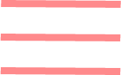
portfolio
tbx
Mes dernières
réalisations...
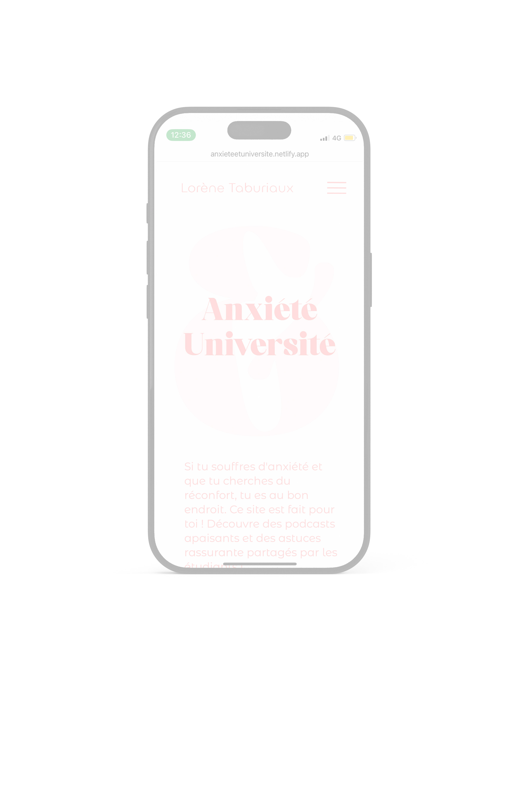
Anxiété & Université
Une étudiante partage son vécu avec la timidité, qui l’a malheureusement menée au harcèlement scolaire et bien d'autres épreuves.
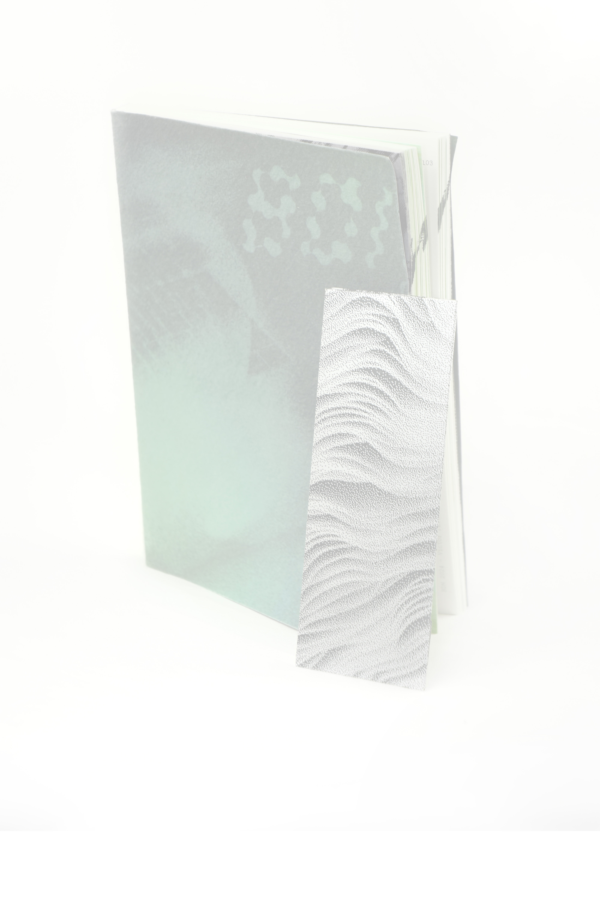
Biodesign numérique
Une étudiante partage son vécu avec la timidité, qui l’a malheureusement menée au harcèlement scolaire et bien d'autres épreuves.
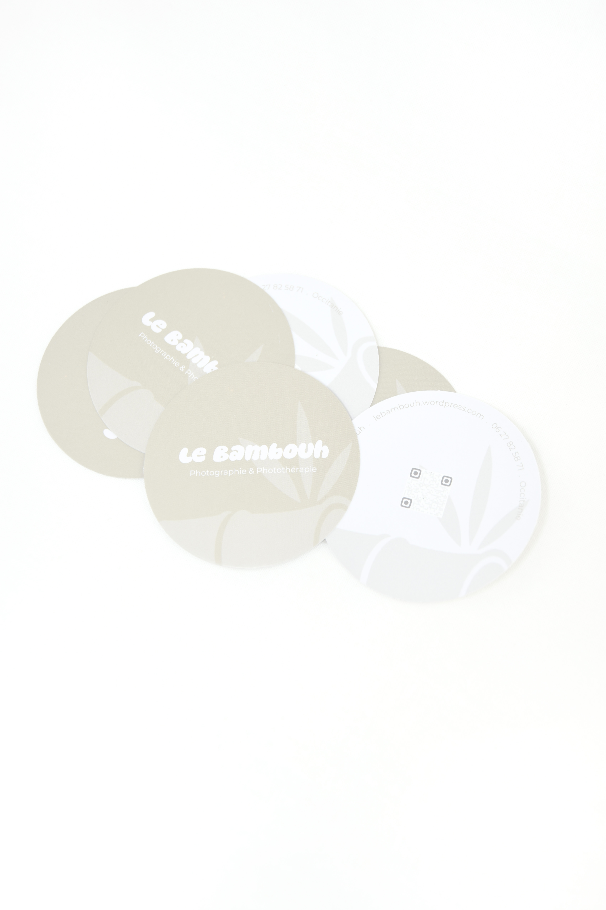
Le Bambouh
Une étudiante partage son vécu avec la timidité, qui l’a malheureusement menée au harcèlement scolaire et bien d'autres épreuves.
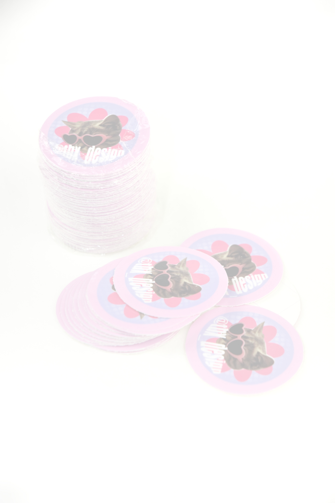
TBX Design
Une étudiante partage son vécu avec la timidité, qui l’a malheureusement menée au harcèlement scolaire et bien d'autres épreuves.
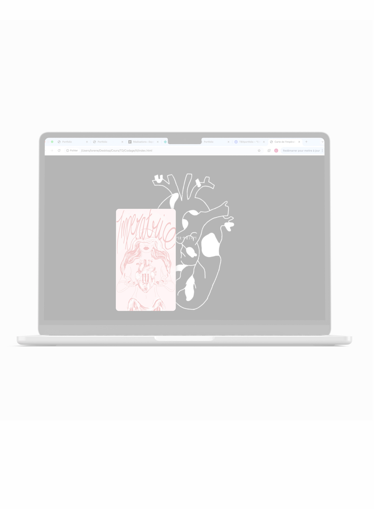
L'Impératrice
Une étudiante partage son vécu avec la timidité, qui l’a malheureusement menée au harcèlement scolaire et bien d'autres épreuves.
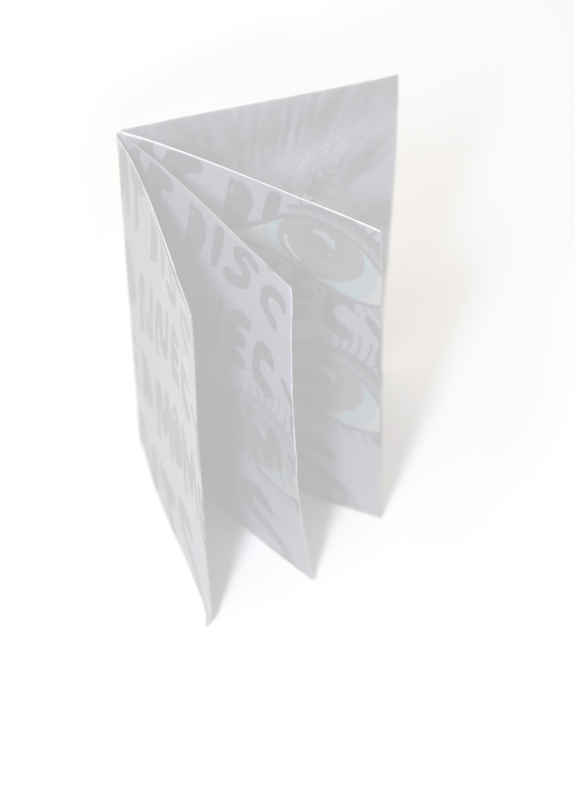
Regard et lâcher prise
Une étudiante partage son vécu avec la timidité, qui l’a malheureusement menée au harcèlement scolaire et bien d'autres épreuves.
TOUS
mes projets
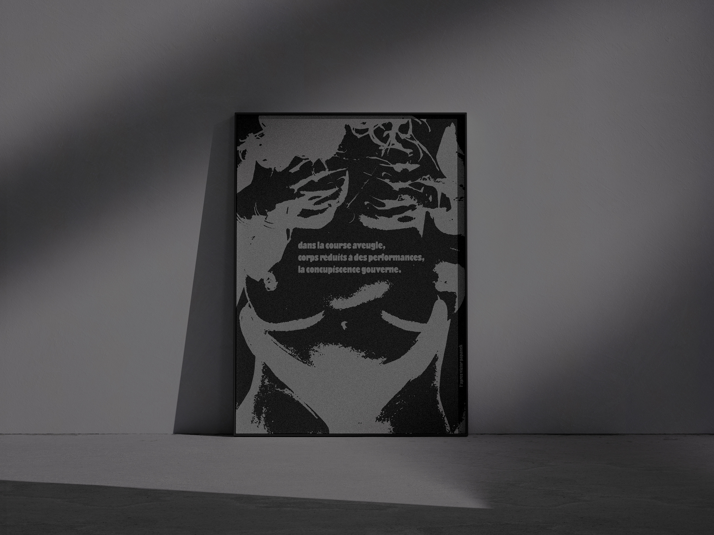
L'après Victor Papanek
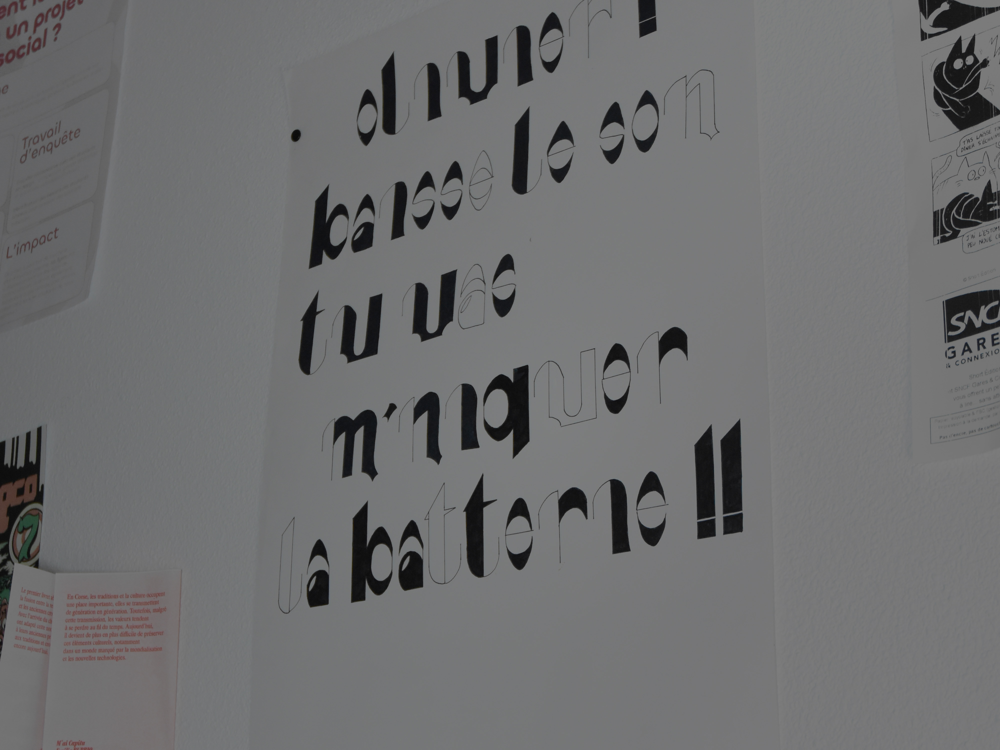
Vinyle PLK
Recherche Typographique
Cartoé'nîmes
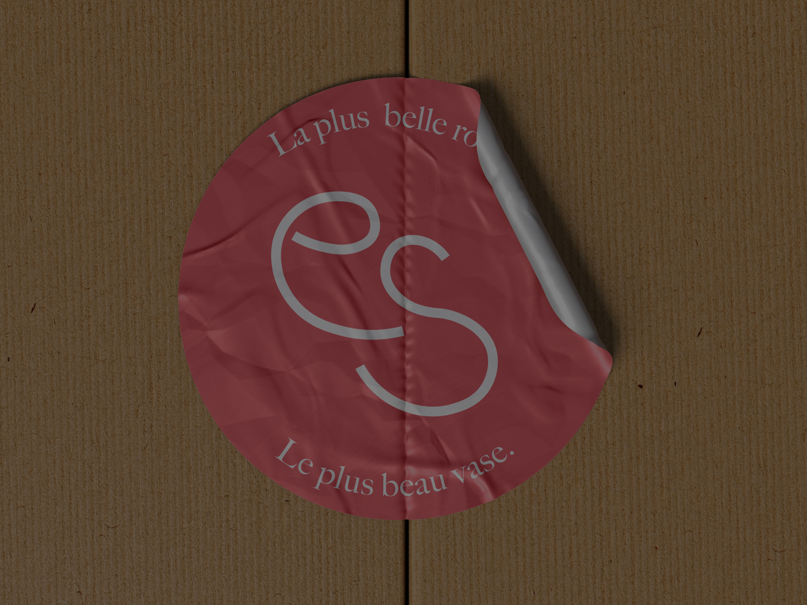
Esmiré
Soignantes du désert
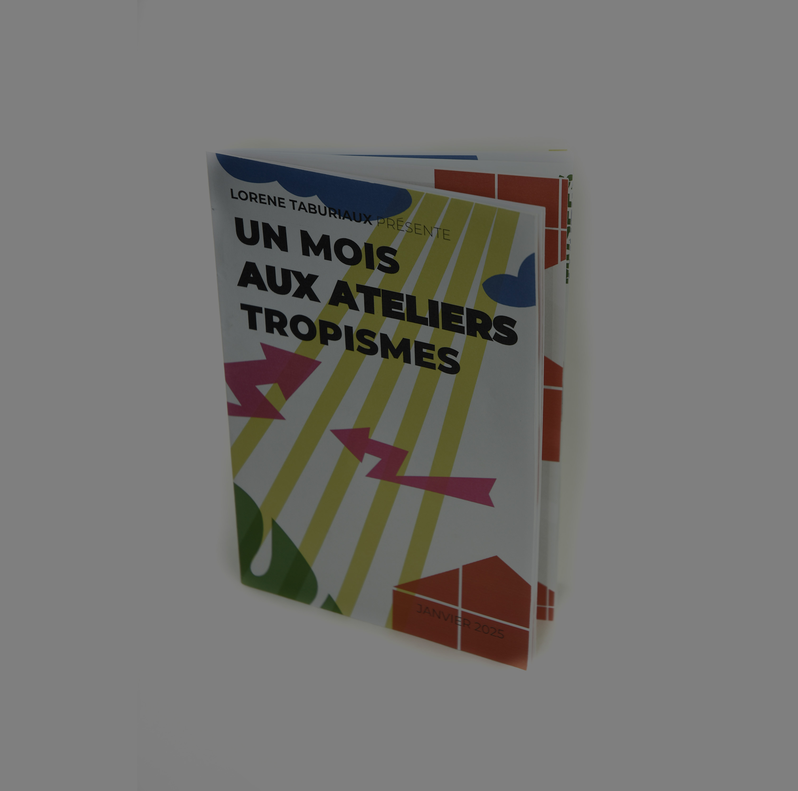
1 mois aux Ateliers Tropisme
Arts'monie
des sens
Wordpress
portfolio